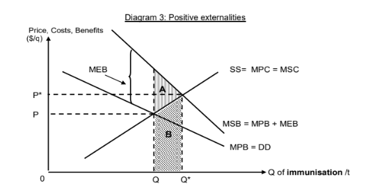

2. Price Mechanism and its Application
In this chapter, we will considet the workings of the price mechanism in a free market economy. In such an economy, buyers and sellers interact freely in the market, with their respective demand and supply decisions affecting the prices of resources, goods and services. These changes in the prices act as signals which provide the information to both buyers and sellers to answer the three basic economic questions. (See in central problem of econs)
Price Mechanism and Its Functions
Free Market Economy
- The govt is not involved in resource allocation
- Household and firms are free to pursue their self-interests.
- Households have the freedom of choice to make decisions on what and how much to consume. All FOPs are owned by households and up to them to decide how to use them
- Free enterprise and competition.
- Consumers and firms make their decisions independently of each other. No one person/authority that is planning and directing the economy, yet it moves towards certain goods in certain quantities. This is achieved via price mechanism or the "invisible hand".
Price mechanism refers to coordinating mechanism by which the independent decisions of consumers and producers result in the allocation of scarce resources in a free market economy.
Interaction of Demand and Supply
Demand
Demand for a good or service refers to the quantity of a good or service that consumers are willing and able to buy at various prices, in a given time period. The law of demand states that there is an inverse (or negative) relationship between price
and quantity demanded, ceteris paribus.Demand
Law of Demand
Quantity demanded of a good refers to the amount a consumer is willing and able to buy
at a given price.
Ceteris Paribus - all other factors affecting (whatever it is) remain unchanged.
Law of Diminishing Utility
The law of diminishing marginal utility (LDMU) states that beyond a certain level of
consumption, as more and more units of a good or service are consumed, the
additional utility a consumer derives from successive units decreases.
Assumptions of the law include:
• The unit of measurement is constant
• Ceteris paribus condition
Total utility is the total satisfaction a person derives from consuming a given amount of
a good per period of time. It is derived from adding up the marginal utilities of consumption of
various units of a good.
Marginal Utility (MU) is defined as the additional satisfaction derived from consuming the
additional unit of the good per period of time.
Consumer Decision Making
Consumers will always attempt to maximise net total utility due to self-interests. Applying marginalist principle, the rational consumer will be willing to purchase as long as MB>MC. So basically, consumer will keep consuming until MU = P(price). This is the point of consumer equilibrum. The MU thus reflects the maximum price consumers are willing to pay for an additional unit of a good.

Demand Curve
A change in the price of the good itself resulting in a change in the quantity
demanded is illustrated by a movement along the demand curve.
A shift in the demand curve, due to a change in some factors other than price
of the good itself (i.e. non-price factors), is referred to as a change in demand.
Factors shifting the demand curve (EGYPT-A)
- Changes in level of income (kw: ability and willingness, purchasing power)
- Changes in price or availability of related goods (kw: substitutes, complementary)
- Expectation of future price changes (kw: current demand, extent of such behaviour depends on whether the good can be stored or if it is perishable)
- Changes in taste / preferences (kw: trends, COVID-19 is somehow this)
- Changes in government policies
- Changes in interest rates or availability of credit
- Changes in population or population structure (demography) (kw: rise in population --> increase in demand, structure change e.g aging population)
- Changes in price of related goods
- Changes in availability of related goods
- Changes in demand for related goods
- Changes in interest rate
- Changes in availability of credit (kw: easy credit, basically means loans are easy to get from banks)
- Changes in demand for related goods
EGYPT-A --> (Expectations, Government Policies, Y (Income), Prices of related goods / Population, Taste / Preferences, Availability of credit / interest rate)
Supply
Supply is the willingness and ability of a firm to offer a good for sale at various prices
in a given time period. The law of supply states that there is a direct (or positive) relationship between price and
quantity supplied, ceteris paribus. Firms aim to maximise total profits (i.e. total revenue – total cost). According to the
Marginalist principle, profit-maximising firms will produce additional units of the good as long
as the marginal benefit exceeds the marginal cost. Marginal benefit of producing an additional unit is basically marginal revenue(MR)
which is also the price(in a perfectly competitive market), so
profit-maximising producers will produce till MR = MC.Supply
Law of Supply
Producer Decision Making
CSQ and Essay
- Explain Supply Factor: (amt depends on marks)
- Explain Demand Factor (amt depends on marks)
- Eval if DD rise is greater or SS rise is greater
- PAP expl
[P]Identify Supply Factor
[E,E]Ref to evi from extracts + elab how it effects supply
[L]Ref impact on SS curve
[P]Identify Demand Factor
[E,E]Ref to evi from extracts + elab how it effects demand
[L]Ref impact on DD curve
DD>SS --> Shortage
SS>DD --> Surplus
Price Adjustment Process
At the initial price level of P, there is a shortage which forces frustrated consumers to bid up the price of coffee beans.
This places upward pressure on prices. As prices increase, quantity demanded falls as consumers switch to other cheaper alternatives. Quantity supplied increases as profit motivated producers are incentivized to increase production.
This process continues until quantity demanded equals quantity supplied at the new equilibrium. The equilibrium output of coffee beans has fallen from Q1 to Q2.
For surplus, same expl but flipped. Add In order to clear excess stock, producers reduce their prices.
CSQ and Essay (Elasticity)
Looks at extent of shifts, responsiveness of Qd and Qs, uses YED, XED etc. Keywords: significant rise, soaring
For CSQ [4m], its just abt one line for each point needed to be stated.
Graph drawing: more elastic = steeper
Identify DD/SS factors
[P]Identify Demand/Supply Factor
[E,E]Ref to evi from extracts + elab how it effects demand/supply
[L might not need for csq]Ref impact on DD/SS curveExplain PED
Factors that affect PED:
- number and 'closeness' of substitutes (more & closer = price elastic)
- proportion of income spent on good (larger = price elastic)
- degree of necessity (less necessary = price elastic)
- habit-forming nature of good (price inelastic)
- time period (long run = price elastic)Explain PES
Factors that affect PES:
- time period (long run = price elastic)
- behaviour of MC as output changes n response to price changes (plenty of spare cap to increase produciton without huge rise in MC, can switch away from producting alt products easily, FoPs are mobile = price elastic)
- how the good is defined (more narrowly defined = price elasticity)- Market Adjustment Process (PAP)
Application of PED & PES to MAP
Single Shift (DD or SS)
- Extent of change depends on PED & PES
- |PED|<1 and PES<1 = both are price inelastic, will take a large increase in price to eleminate the shortage
- less than proportionate
- drawing a graph will make this easy to see
Simultaneous Shift (DD and SS)
- compare the factors and expl YED/XED
- YED (only used when income change)
-- YED<0 --> inferior good (only buy when income decrease)
-- 0
-- YED>1 --> luxury good (more than proportionate change)
- XED (only when price of substitute/complements change)
-- XED<0 --> complementary goods (one rise other falls)
-- XED>0 --> substitute goods (price of one rise, Qd of other rises) -- XED=0 --> independent goods
3. Market Failure & Govt Intervention
CSQ and Essay
Basics
...achieve allocative efficiency
Define AE
a situation where the combination of goods and services produced maximises the total econommic welfare of society, and it is achieved at the output level where MSC = MSB, assuming a private good market, absence of externalities and perfectly competitive markets.
Explain why there is no allocative efficiency
Positive/Negative Externalities
beneficial/adverse impact on a third party not directly involved in the economic transaction.
Demand curve: Marginal social benefit(MSB)=Marginal private benefit(MPB) + Marginal external benefit(MEB)
SS = Marginal social cost(MSC)=Marginal private cost(MPC) + Marginal external cost(MEC)Imperfect Information
Consumer Ignorance
under-estimation/over-estimation of benefits cause percieved MPB to be lower/higher than the true MPBAsymmetric Information
Adverse Selection*
situation in which asymmetirc info btwn consumers and producers results in an unfavourable selection of products/buyers participating in a market, which leads to a missing market for a segment of other buyers/sellers, who do not get to buy or sell the good even though it is beneficial for them to do so. (happens BEFORE transaction)Moral Hazard* situation in which economic agents take greater risks/act less carefully than they normally would because the resulting costs will not be borne by them. (happens AFTER transaction)
Supplier-Induced Demand
if a producer has more information than the consumer, a situation of supplier-induced demand may arise where consumers end up buying more goods/services than what is optimal for them.Public Good*
a good that is non-excludable, non-rivalrous and non-rejectable
- Explain Govt intervention
price mechanism and its functions...
signaling and incentive
he price mechanism performs a signaling and incentive function.
Price acts as a signal between consumers and producers to allocate scarce resources. Consumers signal to the producers their preference for a particular good or service through the price they are willing and able to pay for it. The higher the consumer’s preference for the good, the higher the price they are willing and able to pay.
These preferences are transmitted to producers, who have to make production decisions according to their willingness and ability to sell (i.e. supply).
At the same time, the rise in price is also a signal and incentive for consumers: it signals that energy are now more expensive and is an incentive for them to purchase less energy and Qd falls.
This process continues until quantity demanded = quantity supplied, and the shortage has disappeared. New equilibrium is established at price P’ and quantity Q’.
The price mechanism performs a rationing function. Energy is a scarce resource; the price of energy increases when demand increases. This is a disincentive to some consumers to make the purchase, which rations the energy.Eval
Factor that causes market failure + incentives lack perfect info, rationing less efficient without perfect info
Explaining Market Failure
- Define the Problem (factor)
- Contextualise the problem
- Describe impact on diagram: Divergence between MSC and MPC 
- Explain market (or private) equilibrum, Self interest of agents-->disregard MEC
- Identify social optimum equilibrum
- What is the problem (under/over consumption/production)
- Explain how the deadweight loss arises
- left to market forces... MPB = MPC
- between MPB and MSB/ MSC and MPC
Explaining Market Failure*
Adverse Selection
lemon vs cherries, However, since the better quality products are driven out of the market by low quality products due to asymmetric information, the potential net benefit to society from having some good quality products traded is lost and society’s welfare is not maximised.
Moral Hazard
E.g Insurance, principal-agent(acting for someone else)
...missing market... In general, moral hazard creates lack of trust between potential buyers and sellers for a
product, which means mutually advantageous trade might not take place and there is
thus no market for it. Hence, there is market failure as the potential net benefit to society
from having these goods and services traded is lost and society’s welfare is not
maximised.
Factor Immobility
Two main types: Occupational(movement of FOPs btwn occupations/industries), Geographical(movement btwn geographical areas)
results in unemployment and hence wastage of resources, producing inside PPC, cannot produce at the socially optimal level of ..., resulting in welfare loss.
Public Goods
non-excludable - impossible or impractical for producers to exclude free riders, therefore no consumer would be willing to pay --> no effective demand since consumers are not willing to pay.
no demand-->producers cannot sell their good at any positive price level and thes will not be able to earn revenue--> profit motivated will not produce. free market--> no production of public goods and total market failure occurs --> potential net benefit is lost
Explaining Govt Interventions
- Definition
- Elaboration (how it might be implemented)
- Impact on diagram
- Impact on market or private equilibrum
- How it will solve the problem
- (If applicable) Eval on effectiveness/appropriateness
Production Tax (neg externalities)
- reduces consumption/production levels
- govt can impose a per unit output tax equal to the marginal external cost (MEC) at the socially optimal output Q*, --> firms internalise the external costs. tax raises the producers' marginal private costs of production(MPC), SS curve shift vert up --> fall in market equilibrum
Pollution Tax
- fixed fee per unit of pollution
- some firms choose greener methods of profuction, lowers MEC
- some don't change so marginal cost of supply increases, and firms will cut back on supplies
Subsidies(pos externalities
- increases consumption/production
- govt pay firms a per unit output subsidy equal to MEB at the socially optimal output Q*
- subsidy will lower producers' MPC-->SS curve shifts
- incentiveses consumers to increase in ..., internalising the MEB to society
- govt can vary the per unit subsidy according to MEB
- also subsidies for factor immobility
Tradable Permits*
- permits to pollute issued to firms by a govt/international body. Permits can be traded in a market.
The government first decides on the optimal level of pollution that is allowable. This
aspect makes the policy a command approach. Once the government calculates the total
allowable pollution, the government can either auction the corresponding number of permits
to pollute directly to firms or distribute the permits to firms for free.
after this, firms are free to buy and sell the permits, with price decided by demand and supply forces. Firms with high clean-up costs would wish to pollute more than allocated, so they buy perms from firms with low clean-up costs, who would rather pollute less than quota, so they sell the permits to earn revenue. Thus, some
firms are incentivised to find cleaner methods of production to reduce their pollution,
and the overall pollution level is reduced to the total allowable pollution that the
government set.
They provide incentive to producers to switch to cleaner methods of production, targeting the root cause of the problem, and govt can cntrol amt of pollution.
Grants/Vouchers*
- increase the consumers’ ability to spend on the good or service, thus increasing their demand and consumption of the good or service to the socially optimal quantity,
Direct Provision
Free (public goods)*
- govt not profit-driven, instead the cost of production can e financed through taxes the got collencts, and the public goods can be provided free of charge to consumers
- govt incurs opportunity cost
- outsourcing production to private firms: eliminates the rpoductive ineffienciency associated with direct provision
Direct (may or may not be free)(pos externalities)
- could cause greater welfare loss due to overconsumption
- lack of incentive to produce output at least possible cost --> productive inefficiency
- joint provision: private and public sectors can produce a particular good or service togther --> improves preductive efficiency (e.g private and public hospitals in SG)
Rules and Regulations
- Imposition of standards to limit negative externalities generated
- Laws that command the ser of particulare methods to reduce the negative externalities
- Limit sale/use of certain goods at certain times or at certain places
- Total ban
- Quotas
- Compulsory consumption of goods and services
- Laws that regulate the quality that producers have to meet or laws that force sellers to replace defective goods(adverse selection)
- e.g. emmissions standards on automobile and factories that emit polluting gases, restrictions on lead and benzene content in petrol
- only used when it is very difficult to use other policies to limit the amount of the externalities generated or whe the damage caused is very severe
- whether a ban is desirable or not depends on the extent of negative externalities. when MEC is very high, bans-->improvement in society's welfare
Public Education(consumer ignorance)
- provide information to educate consumers on the true marginal private benefits
Evaluation of Govt Intervention
- Data constraints - imperfect info
- Constraints - price elascity of demand
- Constraints - responsiveness of consumers/producers to measure
- Cognitive Biases
- Targeting the root cause of the problem (pollution tax/ permits)
- Unintended consequences of policies
- Long-term sustainability of policies
- Cost efficiency of policy measures
- sunk cost fallacy (costs incurred by econommic agents and cannot be recovered, yet continue a behaviour due to previously invested resources)
- loss aversion (avoiding a loss over making an equivalent or greater gain)
- saliency bias (tendency for ppl to focus on info they think is more noteworthy while ignoring those that are not worthy paying attention to)
- taxation worsens inequity, adverse effects on consumers and firms
- subsidies, grants, vouchers, improve equity
- productive and dynamic inefficiency of direct provision
- cost of implementing and size of govt budget
6. Introduction to Macroeconomics
In this unit, we study how living standards are measured, with particular focus on using national income to measure and compare living standards over tiem and between countries. We will consider the limitations of doing so and examine whether there are viable alternatives to national income statistics for measuring and comparing living standards.
Standard of Living
Material well-being - stems from the consumption of consumer goods and services
Non-material well-being - refers to aspects of well-being that stems from the intangibles (e.g job satisfaction, amt of leisure time, state of environment...)
Answer
Use of National Income to Measure and Compare SoL
Concept of National Income
National income - total income earned by a nation from producing the country's total final output over a given period of time National expenditure == national product as the amt of spending on a country's total final output must equal the value of that output
National product - value of the total final output of a country over a period of time
National expenditure - total spending on a country's total output over a period of time
The above three concepts are equal in value. Why?
National income == national expenditure as to produce the national output, the firms employ FOPs which are owned by households.
In a free market, all FOPs are owned by households who offer their FOP to firms for production in exchange for income.
Firms pay for these FOPs out of the revenue that they earn from selling the final output(which is == expenditure) will all be paid out as rent, wages, interest and profits to the households.
Thus national income = national expenditure.
Answer
Approaches- Output
- Expenditure
- Income
Adds up the value of all final goods and services by every sector of the economy, to give the value of the national output/product. To avoid double counting, only the value of the final output will be added.
Focuses on expenditure needed to purchase the nation's output. Add up expenditure needed to purchase the national output to get national expenditure. This is obtained by adding up the total spending on domestically produced goods and services by all economic agents, both local and foreign.
Adds up all the factor income earned by the FOPs too give the value of national income. i.e. wages + rent + interest + profits
Value refers to quantity of a good multiplied by its price
Write down what you can remember about this part. (hint: three concepts + approaches)
National Income Statistics
The value of all final goods and services produced by factors of production located within a country's geographical boundaries,
during a given period of time(usually a year). The aggregate income of an economy generated by factors of production owned by residents of a country during a given period of time
(usually a year) regardless of whether these FOPs are llocated within the geographical boundaries of the country or abroad.
-- income earned by foreigners from a country to their home country is called factor incomes paid abroad and is excluded from the country's GNIGross Domestic Product(GDP)
-- does not matter if it is foreigners or locals, as long as it is within the geographical confines of the countryGross National Income(GNI)
GNI is calcualted by adding to GDP, factor income earned by residents from their FOPs located overseas and subetracting factor income earned by non-residents in the domestic economy
GNI = GDP + factor income from abroad - factor income paid abroad
= GDP + Net factor income from abroad
Real vs Nominal Values
| Nominal GDP (GDP valued at current prices) |
Real GDP (GDP valued at constant prices) |
|---|---|
| GDP value is measured in terms of the prevailing market prices of the goods and services in that year | GDP value is measured in terms of the prices of goods and services in a particular base year |
Real value is a measure of value that takes into consideration changes in prices over time. Besides the concept of real GDP, there are also
the concepts of real wages, real interest rate etc.
Since value = price x quantity, when a country's GDP changes over time, it could be due to purely changes in price/quantity or more commonly, a combi of both.
To find out whether an economy has grown, economists are interested in finding how the quantity of final goods and services has changed over time.
Hence, they use real GDP, which discounts inflation.
Aggregate Vs Per Capita values
Nominal and real GDP measuer in aggregate(total) terms.
To measure a country's average level of output or income, economists use per capita measures.
GDP/Total population = GDP per capita
Write down what you can remember about this part. (hint: two impt measures and 2 ___vs___)
Comparing a country's SoL over time
National income is used to indicate living standards because as a measure of a nation's income level, it reflects the nation's residents'
ability to consume goods and services. National income is thus fundamental determinant of a country's material aspects of living standards.
To account for changes in the general price level (e.g. inflation) To account for changes in population size over time.
Real national income per capita(real GDP/GNI per capita) is typically used to measure and compare a country's living standard over time.
Why real?
-- By valuing a country's final output at constant prices, any increase in value must necessarily be due to a rise in the economy's output,
and hence reflects the economy's increased ability to satisfy its people's materail needs and wants.
-- The rise of a country's well-being over time is dependent on the rise of the quantity of goods and services produced, rather than a mere
rise in the money value of the goods/services produced in cases of inflation.
-- When a rise in nominal national income is due mainly to increases in prices, with negligible increase in output and hence consumption, there
will be negligible improvement in the material well-being.
Why per capita?
-- When country's real national income rises faster than the population, it implies that the average income
per person and thus lvl of consumption of goods and services, has increase, leading to an improvement in material well-being over time.
Limitations of using real naitonal income per capita to compare SoL over time
- Data collection problems
- Size of the underground economy
- Changes in the size of the Non-market Economy(Non-monetary sector)
- Changes in the distribution of national income
- Changes in the composition of national income
- Mistakes in data collection due to omissions, double counting or inflation of figures. e.g income tax returns may be inderstated because information provided by taxpayers may be
inaccurate or forms may be incomplete.
- More often in developing countries due to lack of proper accounting systems and expertise of officials, and many inaccessible areas.
- Illegal Production e.g. manufacturing and trafficking of harmful drugs, firearms etc
-- cause illegal so obv not declared in tax income, and hence omitted from national income
- Legal activities which are not declared in income tax returns e.g. moonlighting (extra work outside of normal jobs)
- unrecorded transactions understate the country's national income figures.
- significant in countries where crimes are pervasive
- output produced by labour services that do not pass thorugh a market is not counted in the national income stats even when they contribute to total output
- Home-based/Voluntary Activities e.g. Your mom cook for u, you paint your house urself
- Subsistence agriculture (ppl grow crops for their own consumption and barter trade)
-- could be significant undervaluation of the country's GDP since the output from this sector is excluded from GDP(more often in developing countries)
- increase in real GDP may not reflect an increase in income of all residents equally as it reports the average
- typical of many rapidly growing countries, resulting in growing inequality
- Use the Gini coefficient as a supplementary indicator(Book 4)